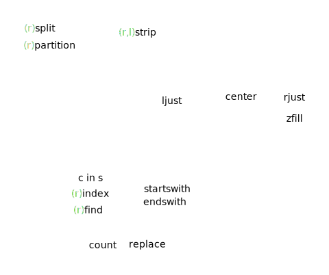

Strings and format
strings
TODO: unicode
TODO: str(bytes, encoding, errors) is equivalent to bytes.decode(encoding, errors)
TODO: str.encode(encoding="utf-8", errors="strict")
TODO: io.StringIO, io.BytesIO, tempfile.SpooledTemporaryFile
TODO: https://docs.python.org/3/library/string.html#string-constants
https://stackoverflow.com/questions/40348174/should-i-use-python-casefold
https://stackoverflow.com/questions/34546171/python-expandtabs-string-operation

concatenation
Strings .join() vs += in a loop: http://stackoverflow.com/questions/1349311/python-string-join-is-faster-than-but-whats-wrong-here/21964653#21964653
Strings are immutable, we can’t use these operations on them: https://docs.python.org/3/library/stdtypes.html#typesseq-mutable
substrings
reverse
Be careful with the sep argument of a_str.split(): if a sep arg is not specified or None, an empty string is split into an empty list: ''.split() == []; otherwise: ''.split(',') ==[''].
When it’s not actually split: returns a list containing the string. ' a '.split(',') == [' a ']; if a sep arg is not specified or None, it also trims it: ' a '.split() == ['a']
split and trim
alignment
checks
f-strings
https://www.python.org/dev/peps/pep-0498/#expression-evaluation:
The expressions that are extracted from the string are evaluated in the context where the f-string appeared. This means the expression has full access to local and global variables. Any valid Python expression can be used, including function and method calls.
Gotcha: we can’t have '\n' in a expression part of an f-string, e.g.: f"{'\n'.join(l)}" won’t work.
Our choises are:
- have it joined outside:
s = '\n'.join(l); f"{s}" newline = '\n'; f'{newline.join(l)}''{}'.format('\n'.join(l))print(*l, sep='\n')
https://docs.python.org/3/reference/lexical_analysis.html#f-strings
format
https://docs.python.org/3/library/string.html#format-specification-mini-language
format_spec ::= [[fill]align][sign][#][0][width][grouping_option][.precision][type]
fill ::= <any character>
align ::= "<" | ">" | "=" | "^"
sign ::= "+" | "-" | " "
width ::= integer
grouping_option ::= "_" | ","
precision ::= integer
type ::= "b" | "c" | "d" | "e" | "E" | "f" | "F" | "g" | "G" | "n" | "o" | "s" | "x" | "X" | "%"
'hello, {}'.format(username)
'{1} is better than {0}, {2}{2}'.format('emacs', 'vim', 'ha')
'{0} {2} {1} {2}'.format(*tpl)
'{0!s}'.format(an_obj) # calls str() on the argument
'{0!r}'.format(an_obj) # calls repr() on the argument
'{0!a}'.format(an_obj) # calls ascii() on the argument
'repr() shows quotes: {0!r}; str() doesn't: {0!s}'.format('test')
'{first} {last}'.format(first='John', last='Smith')
'{first} {last}'.format(**{'first': 'John', 'last': 'Smith'})
'{0.real}, {0.imag}'.format(1-1j)
coord = (3, 5)
'X: {0[0]}; Y: {0[1]}'.format(coord)
'{:f}'.format(1) == '1.000000'
'{:.1f} {}'.format(698.243, 'GB') == '698.2 GB'
'{0} {0:g}'.format(1.0)
'{:+f}; {:+f}'.format(3.14, -3.14) == '+3.140000; -3.140000' # always show sign
'{: f}; {: f}'.format(3.14, -3.14) == ' 3.140000; -3.140000'
'{:-f}; {:-f}'.format(3.14, -3.14) # default, same as just {:f}
'{:#5x}'.format(15) == ' 0xf'
'{:#5X}'.format(15) == ' 0XF'
map('%Y-%m-%d'.format, lst)
>>> '{:<30}'.format('left aligned')
'left aligned '
>>> '{:>30}'.format('right aligned')
' right aligned'
>>> '{:^30}'.format('centered')
' centered '
>>> '{:*^30}'.format('centered') # use '*' as a fill char
'***********centered***********'
import locale
locale.setlocale(locale.LC_ALL, 'en_US') ## in this example we set a locale to see the difference:
'{:n}'.format(10**6) == '1,000,000'
locale.setlocale(locale.LC_ALL, locale.getdefaultlocale())
'{:.1%}'.format(0.33) == '33.0%'
'{:.3}'.format('xylophone') == 'xyl'
'{:{fill}{align}{width}}'.format('hello', fill='*', align='^', width=11) == '***hello***'
for formatting dates see the dates section
not covered: printing binary and octal